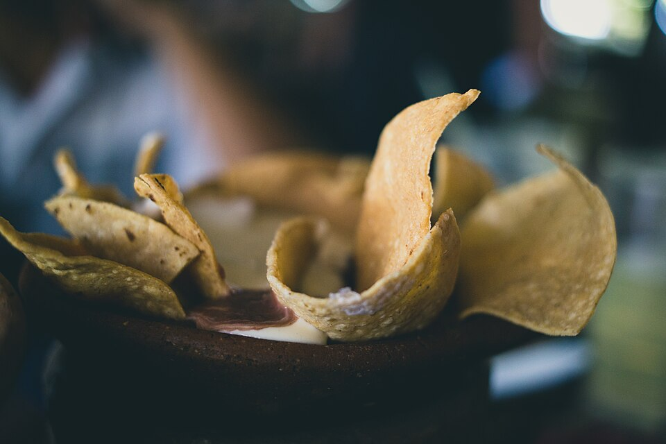

Home
Chips and Salsa Verde
This fresh and tasty homemade appetizer is the perfect pairing for almost any hispanic or hispanic adjacent dish! You'll never want to go back to regular canned and bagged chips and salsa!
Salsa

Ingredients
- 1 lb tomatillos
- 1/2-1 jalapeño, minced
- 1/4 cup chopped onion
- 1 cup cilantro
- 1 lime, juiced
- 1-3 tbs sugar, to taste
- 1/2 ts minced garlic
- Salt, to taste
Steps
- Remove tomatillo skins, then place tomatillos and jalapeño on a pan.
- Broil the tomatillos and jalapeño for 3-5 minutes, then flip and broil until they begin to brown.
- Once browned, remove from oven and set aside.
- Blend the onion, cilantro, lime, sugar, and garlic in a blender.
- Add tomatillos and jalapeño to the blender and blend until smooth
- Add salt to taste, then add more sugar and jalapeño to taste.
Chips

Ingredients
- 12 6in corn tortillas
- Vegetable oil
- Salt, to taste
Steps
- Cut tortillas into triangles or strips
- Heat 1/2in oil in a large skillet on medium heat.
- Once the oil reaches about 340°F, place some of the chips into the oil.
- Cook lightly on each side, until lightly brown. Careful not to let the oil to get too hot, or the chips will burn easily
- Remove chips from oil and place on a baking sheet lined with paper towels. Lightly sprinkle salt on top of chips and allow them to cool.
- Serve with Salsa and Enjoy!